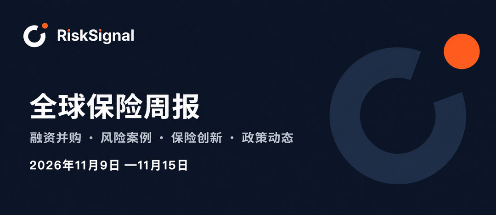
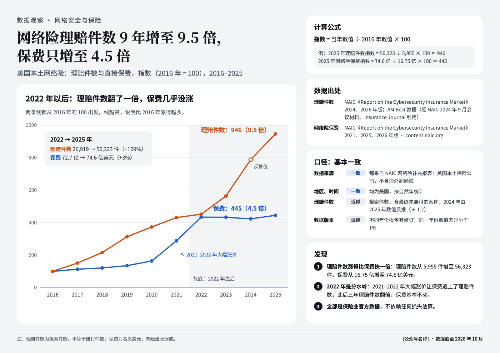
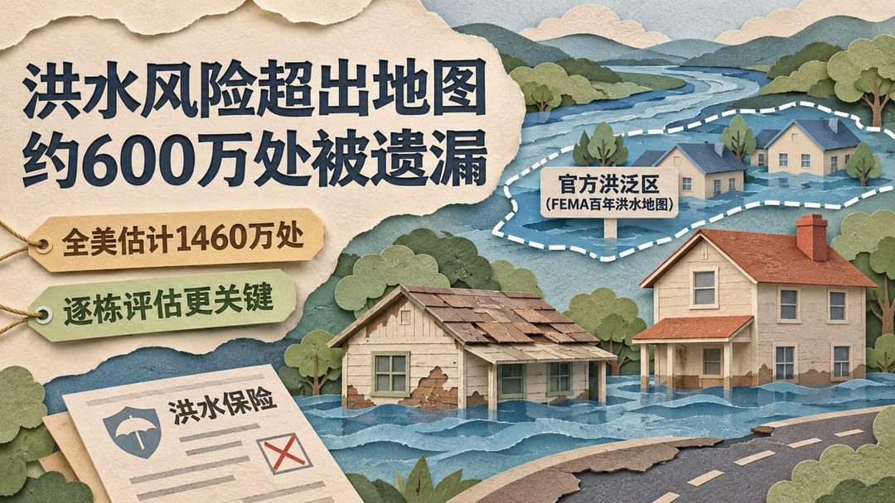
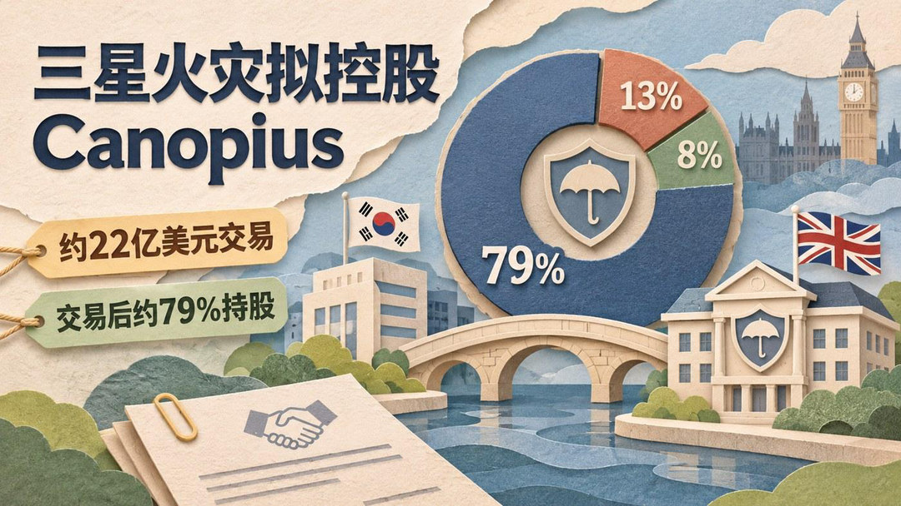
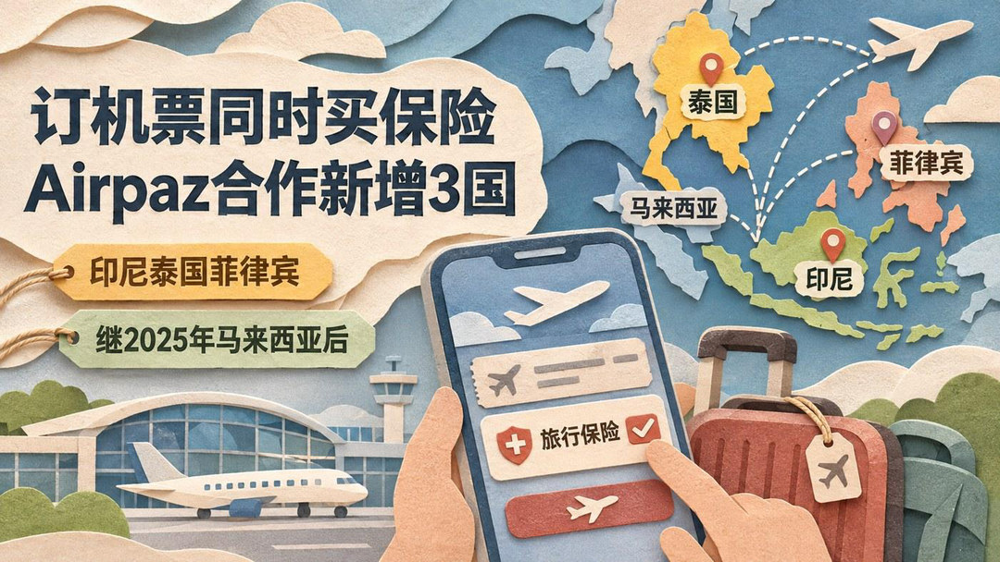
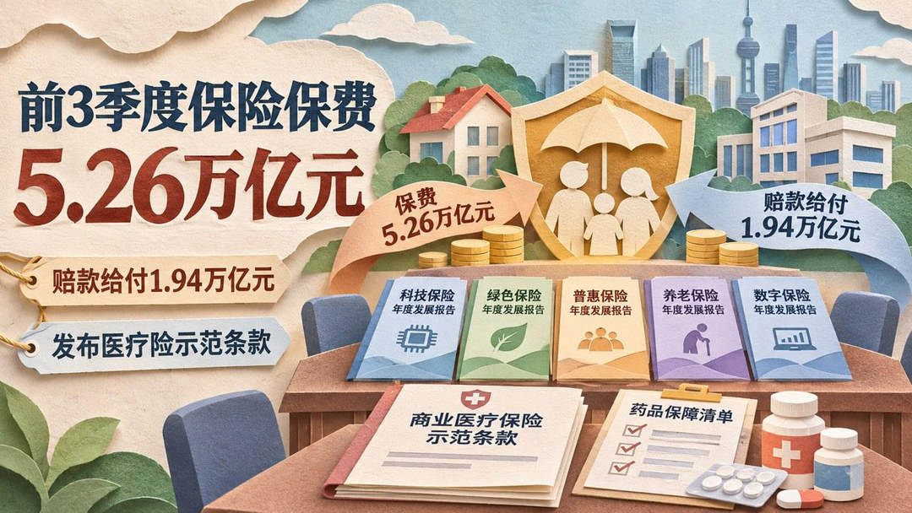
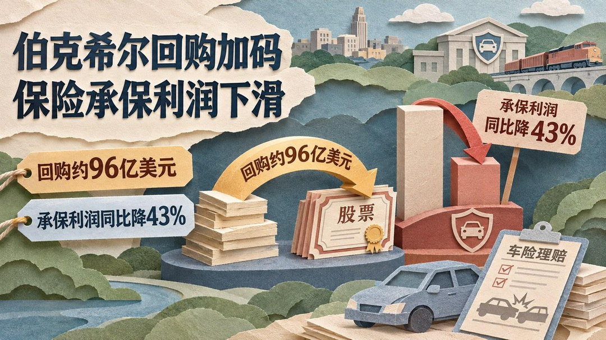
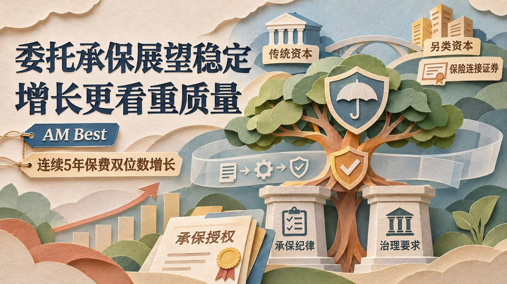
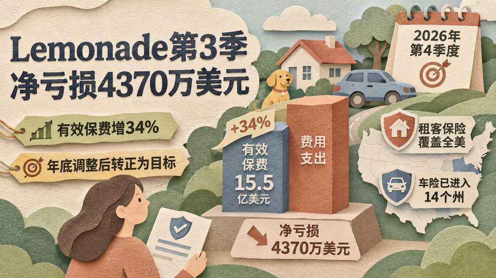
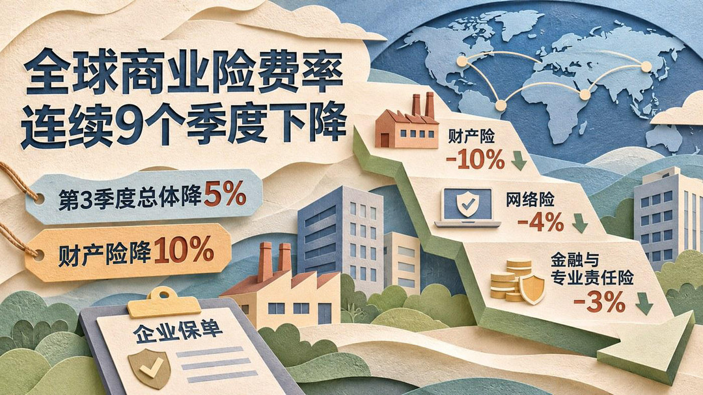

AI 代理闯祸有了独立保单，Cowbell AI 责任险 2027 年开售
保险创新
怡安 170 亿美元全现金收购 USI，KKR 预计获约 20 亿美元收益
并购与合作
前 3 季原保费 5.26 万亿元，协会发布商业医疗险示范条款
监管政策
INNOVATION
保险创新
Neo推短期医疗险，最高保障150万美元
健康保险代理机构Neo Insurance Solutions推出短期医疗险HarborSTM，由Everest集团旗下公司按地区承保。产品设Essential、Access和Secure共3档，保障期间最高给付限额可达150万美元，并提供不同免赔额及费用分担选项。3档均包含年度健康检查，Access和Secure的门诊及急诊诊所就诊共付额为40美元；Secure在保单条件内不限相关就诊次数。双方已合作近5年，Everest负责承保及计划管理，Neo负责账单管理，产品可接入全国医疗服务网络。公告同时明确，这类产品并非全面重大医疗保障，也不属于《平价医疗法案》规定的最低基本保障；可购买地区、除外责任和具体待遇因州而异，不能仅以最高保额判断保障范围。
来源Coverager · 2026年11月9日
Relay AI替代理人填报价，把电话邮件接入承保门户
Relay AI面向个人险独立代理机构，把家财险和车险报价中的信息收集、重复录入与承保门户填写交给自动化工具。联合创始人Jerry Ye介绍，产品涵盖新业务报价、续保重新比价，以及可在夜间接听电话、收集资料并发送初步报价的语音代理。系统从电话、邮件和代理业务管理系统获取信息，也参考房产网站、地图及许可记录，再自动填写比价系统与保险公司门户，代理人负责审核、发送报价及提供建议。公司成立不足6个月，已发布弗吉尼亚州Members Assurance代理机构的客户案例，但访谈没有披露量化节时或转化结果。未来6个月，公司计划与愿意共同调整流程的技术型代理机构逐步推广，先完善适配，再推进更便捷的部署。重点是减少同一客户信息在多个系统间重复填写。
来源Scout InsurTech · 2026年11月9日
Cowbell为AI代理失误推独立保险，2027年开售
Cowbell宣布推出面向美国中小企业的独立AI责任险，计划于2027年1月1日开售，仅通过批发经纪渠道按非标准市场方式提供。产品针对企业部署的AI代理造成的自身损失及第三方索赔，以合同定义的“AI事件”为触发范围，涉及模型漂移、恶意操控及未经授权的使用等情形。报道列举，代理重复支付供应商后无法追回的款项、调查及停用代理费用、纠正不安全输出，以及被盗凭证引发的AI使用账单等可能获得保障。客户因错误服务起诉时，产品也可覆盖相应抗辩与赔偿费用，仍以条款为准。承保会关注企业能否观察AI行为、赋予系统多大自主权，以及治理措施。此次发布是独立产品，区别于公司已有网络险中包含的AI保障，尚未进入正式销售日期。
来源SiliconANGLE · 2026年11月10日
东京海上布局机器人保险，日本保维修英国连住宅一起保
东京海上旗下业务分别在日本和英国推进机器人保险，覆盖家庭及工作场所的新风险。日本东京海上日动计划11月推出AI机器人险，面向轮式、四足和人形机器人，保障碰撞、自然灾害导致的维修或更换费用，以及第三者人身伤害和财产损失责任，还可覆盖停机期间替代工作人员或租用机器人的费用。定价将考虑机器人用途和运行环境。英国方面，Tokio Marine HCC International与经纪商Adrian Flux合作，推出同时保障家用人形机器人及其所在住宅的家庭保险，并预期机器人自2027年起进入英国家庭。双方称英国方案可能是全球首个把这2类保障结合的产品，条款将随技术及风险演变。2地产品属于不同安排，不能将日本全部保障责任直接套用于英国版本。
来源Coverager · 2026年11月11日
手表数据能替代体检吗？寿险核保开始看日常活动
Digital Insurance刊发观点文章，讨论可穿戴设备数据在寿险加速核保中的作用。作者指出，美国2024年已有6200万消费者使用健身追踪器，活动、静息心率、心率恢复及睡眠等信息，可提供传统胆固醇、血压、体重指数和家族史之外的个体健康视角。文章认为，这些数据有助于完善风险评估和定价判断，主题是对传统指标的补充及潜在替代，并非宣布某款保险已经取消体检。
来源Dig-In · 2026年11月11日
人保首单“智算保”落地，同时保障算力硬件与AI服务
人保财险深圳分公司与中企通信签署国内首单“智算保”组合保单，将算力基础设施及AI服务应用风险放入同一保障方案。组合包含算力中心运营期财产损失保险和人工智能产品应用费用损失保险，分别对应物理硬件与应用服务2个层面。前者保障服务器等贵重硬件因火灾、电气故障等意外造成的财产损失；后者针对大模型、词元调用服务故障、中断或性能不达标，影响下游业务时，企业自身经营损失及对客户的相关赔付费用。词元即Token，是大模型服务常用的计量单位，企业按调用量采购AI能力，使服务连续性成为重要风险。报道指出，传统产品较集中于硬件，对服务中断引发的上层业务损失覆盖不足。此次签单标志方案进入实际应用，但报道未公布保额、保费或赔付限额，具体责任仍须以相应保单条款为准。
来源金融时报 · 2026年11月12日
RISK CASES
风险案例
洪水地图外也有风险，研究指600万处房产被遗漏

Insurance Journal转载研究者文章指出，美国洪水风险房产可能比联邦应急管理署FEMA百年洪水地图标示的多约600万处，总数估计为1460万处。部分官方地图已有约20年未更新，且主要依赖历史数据，难以充分反映未来风险。研究团队进一步为休斯敦近100万套住房建立逐栋风险评分，综合预估水深、房龄与建筑状况、道路通行，以及维修成本和周边洪水保险覆盖。结果发现，同一社区内部房屋之间的脆弱性差异，可能大于社区之间的差异。团队此前对休斯敦10万处已知易受淹建筑的研究也显示，超过50%位于官方洪水边界外，且更可能状况较差、缺乏保险。文章强调，地图划线不能替代具体房屋的损失与恢复能力评估，普通房主险通常也不包含洪水损失。
来源Insurance Journal · 2026年11月9日
亚利桑那车盗下降21%，假身份购车却可能漏计
亚利桑那州汽车盗窃管理机构报告，2026年前3季度登记的车辆盗窃案较去年同期下降21%，延续此前较低的报案水平。但机构提醒，有组织犯罪正转向以虚假或被盗身份融资购车、租车，再伪造产权文件隐藏贷款留置权，把车辆卖给不知情买家或运往境外。部分执法机构把此类案件当作民事纠纷，车辆便未进入全国犯罪信息中心的被盗数据库，使传统盗窃统计无法完整反映损失。1家当地经销商报告可疑产权证后，调查人员识别出6辆合计价值超过75万美元的涉案车，文件均被修改以隐藏留置权，并与境外犯罪组织关联的欺诈购车有关。机构认为，新车防盗技术提高后，犯罪者更倾向用欺诈获取高价值车辆，而非大量盗走低价值车辆。该变化意味着盗窃数量下降与欺诈损失暴露可能同时存在。
来源Insurance Journal · 2026年11月9日
Fireworks AI数周内2次遭入侵，客户数据受影响
AI模型服务商Fireworks AI通知客户发生数周内第2起已知安全事件。公司称，10月24日有未经授权的第三方入侵托管其设备的外部云服务商；知情人士表示，数万份文件被访问，其中部分包含客户数据。此前10月初的另一事件涉及内部凭证被滥用，攻击者得以进入部分客户账户。后续调查发现，早期事件影响账户和账单信息，少数账户还涉及密钥等机密、数据集及未完成模型。Fireworks称正与客户直接沟通，获得Palo Alto Networks协助调查并已通知执法部门，尚未披露最新事件攻击者身份。公司网站显示其客户超过1万家，客户包括Notion与Cursor等，但报道没有说全部客户均已受影响。这2起事件分别涉及外部服务商与内部凭证，揭示AI服务链的不同数据暴露路径。
来源Insurance Journal · 2026年11月10日
欧洲骚乱风险上升，部分保险公司限额、加免赔额
欧洲多地示威及骚乱风险上升，保险公司开始提高免赔额、降低赔偿限额，部分高风险地点甚至取消相关保障。Morningstar DBRS保险业务负责人表示，罢工、骚乱及民众动乱损失的严重程度，正让这类风险呈现类似自然灾害的累积特征。近期法国、德国、比利时及葡萄牙等地出现抗议，商业场所与公共建筑受到影响，Howden称保障条款收紧可能令部分投保人暴露于损失之下。不过，安联表示没有因最新抗议普遍限制承保，而是按个案评估地点及周边风险。Howden Re已推出UNREST分析工具，帮助保险公司判断暴露集中度、事件演变及组合影响。AM Best指出，原本常附于商业保单中的骚乱保障，正被单独处理以反映大额损失潜力。各公司做法并不一致，不能将局部收紧理解为全欧洲统一停止承保。
来源Insurance Journal · 2026年11月12日
黑客盯上冷库温控系统，网络攻击可能变成实物损失
美国多个联邦部门警告，工业制冷及温度监测系统正面临持续网络威胁，依赖冷藏的组织都可能成为目标。FBI、网络安全与基础设施安全局等机构表示，攻击者利用零售食品及冷藏设施中可经公共互联网访问的控制器漏洞，成功入侵后可能改变温度，造成库存损失、火灾危险或缩短设备寿命。官方建议运营方将相关设备移出公共互联网，与企业办公网络隔离，并及时安装软件更新。近几个月商业冰箱和冷柜已遭多轮攻击：美国军事基地超市8月出现的异常正按网络攻击调查，法国上月冷柜攻击造成数千万欧元损失，另一轮攻击又波及欧洲超过100家商店。报道未确认攻击者身份，也未公布保险赔付。事件显示，冷链控制系统被篡改后，影响可能从数据和运营中断延伸到货物及设备的实际损坏。
来源Carrier Management · 2026年11月12日
FUNDING
融资
Kalepa获7500万美元融资，AI承保平台估值4.7亿美元
纽约保险科技公司Kalepa完成7500万美元B轮融资，估值4.7亿美元，由Updata Partners领投，IA Ventures与Inspired Capital继续参与。公司累计融资达9100万美元，此前于2021年完成1400万美元A轮。Kalepa成立于2018年，提供以AI连接保险运营、承保、定价及业务组合监控的平台，希望把分散的工作流程整合起来。公司表示，过去1年收入与客户数量均达到此前的3倍；这一增幅属于公司披露，报道未提供具体收入基数。新资金将用于扩大AI产品线、进入更多市场，并计划在2027年把员工人数翻倍。公司上月任命前Affirm软件工程副总裁为首席技术官，过去12个月也补充了产品及销售负责人，以支持后续技术与商业扩张。
来源FinTech Futures · 2026年11月9日
Soter保险B轮再获投资，渣打系与SBI加入
总部位于阿布扎比的数字资产保险科技公司Soter Insure宣布，B轮融资完成追加交割，渣打旗下SC Ventures与日本SBI集团作为战略投资者加入，Token Bay Capital跟投，新增金额未披露。此前于2026年7月公布的首轮交割由Galaxy领投，Coinbase Ventures等参与。公司计划把资金用于增强承保能力、建设技术基础设施，并扩展亚太、欧洲和美国市场。Soter于2024年创立，在伦敦、纽约及迪拜设有运营办公室，主要服务处理数字资产的金融机构。报道指出，网络攻击、金融犯罪和智能合约故障，是机构进入数字资产市场时需要处理的保障缺口。此次投资表明传统金融与数字资产投资者共同参与，但公告未披露具体保单条款或新增承保额度。
来源Certi News · 2026年11月9日
Connie获3500万美元循环信贷，扩张Medicare经纪服务
美国医疗保险经纪公司Connie Health从Rivonia Road Capital获得3500万美元资产支持循环信贷额度，用于获取新保单业务和收购，并可扩大至1亿美元，支持全国扩张。该额度以其Medicare业务组合作支持，属于债务融资，不等同于股权资金。Connie于2019年成立，总部在波士顿，结合数百名本地持牌代理人与AI平台，为客户选择Medicare Advantage、补充医疗和处方药计划提供服务；平台支持获客、合规、后台运营及参保后服务。公司此前累计股权融资约8500万美元，最近一轮为2025年初由HealthQuest Capital领投的B轮。报道还援引领英显示员工178人、过去1年增长27%，这一人员口径与融资额度、实际投放金额应分别理解。
来源Coverager · 2026年11月11日
M&A · PARTNERSHIP
并购与合作
三星火灾拟联手KKR等收购Canopius，持股升至79%

据Coverager援引的报道，三星火灾海上保险计划联合KKR与韩国投资公社KIC，以约22亿美元收购英国专业保险公司Canopius的控股股权。三星火灾目前持有Canopius约40%股份，交易完成后预计升至约79%；KKR和KIC拟分别持有约13%和8%。报道同时披露，KKR拟投入5亿美元，KIC拟投入3亿美元，其余交易资金的具体安排未在短讯中展开。股权比例描述的是交易完成后的预计结构，现有40%持股并不能与79%简单相加。此次安排把韩国保险集团、私募资本与主权投资机构集中到同一家英国专业险公司，也将改变原有少数股权参与的控制关系。报道使用计划与预期口径，尚不等于交易已交割；具体完成进度及最终条件仍需后续公告确认。
来源Coverager · 2026年11月9日
USI拟以170亿美元售予怡安，KKR预计获20亿美元收益
KKR在第3季度业绩中表示，向怡安（Aon）出售USI Insurance Services的170亿美元全现金交易，若顺利交割，预计将在2026年第4季度带来约20亿美元调整后净收益，相当于每股超过2美元。该收购于8月31日宣布，仍存在完成时间与结果的不确定性。USI是KKR于2017年开展的首笔核心私募股权投资，公司此前预计税后回款约33亿美元，成交价较2026年6月底未受交易影响的估值高约33%。同季KKR保险业务经营收益为2.3亿美元，低于去年同期3.05亿美元，其中包含Global Atlantic年度精算假设复核带来的2600万美元费用。Global Atlantic管理资产2230亿美元。交易对价、出售收益及保险日常经营收益属于不同指标，不能把它们直接相加。
来源InsurTech Insights · 2026年11月9日
Simplicity收购Pinnacle Atlanta，扩大高净值保险规划
Simplicity Group宣布收购Pinnacle Atlanta，扩展面向高净值客户的保险与财富规划能力。Pinnacle负责人Austin Knowles和Mike Becher将以合伙人身份加入，进入Simplicity亚特兰大办公室的现有团队。2人均有近25年金融服务经验，其中超过18年从事保险经纪。他们主要向独立财务顾问、财产与意外险代理机构及家族办公室提供保险和财富保护策略。交易使Pinnacle团队可使用Simplicity更广的分销平台、技术与机构资源，支持其顾问及合作机构客户。公告未披露对价、收购比例、业务收入或整合时间表，因此不能把资源扩展直接表述为已实现的增长成果。此次安排的已知重点，是把长期服务高净值客户的专业团队纳入更大的保险分销体系。
来源Coverager · 2026年11月10日
Tune Protect携Airpaz扩至3国，订机票可同时投保

Tune Protect把与在线旅行预订平台Airpaz的合作，扩展至印度尼西亚、泰国和菲律宾，此前双方已于2025年在马来西亚推出相关服务。旅客可在Airpaz网站或手机应用预订机票时购买旅行保险，保单以数字方式签发，并可在线查看保障及获取理赔支持。合作由再保险业务Tune Protect Re统筹，本地保险伙伴包括马来西亚Tune Protect、印尼Oona、泰国Krungthai Panich和菲律宾Pioneer。此次新增3个市场，使保险购买入口进一步嵌入亚洲数字出行渠道，但不同国家仍由当地伙伴提供相应保险安排。Tune Protect称仍关注扩展至其他区域市场的机会；公告未披露销量、保费收入或具体保障限额，也未表示各地条款完全相同。
来源Coverager · 2026年11月10日
Amdocs约3.4亿美元收购EIS，首次进入保险软件市场
通信系统供应商Amdocs以约3.4亿美元现金收购云原生保险技术平台EIS，首次进入保险业，若达到部分业绩条件，后续还可能支付额外对价。EIS系统覆盖保单管理、收费、理赔及客户互动，服务寿险、年金和财产意外险，客户包括Aflac、CSAA、Allstate及法国巴黎银行保险等。Amdocs计划将原为电信行业打造的AI智能体操作系统aOS适配保险业务，与EIS平台结合，让AI进入核心运营，同时满足受监管行业对治理及责任追踪的要求。EIS的OneSuite将产品、客户、分销、保单及理赔功能整合于云平台，支持开放接口和受控自动化。Amdocs认为，保险与通信客户都依赖复杂关键系统、数据密集流程及严格监管，收购有助于拓宽市场。公告中的整合及AI能力扩展仍是后续计划，并非全部完成。
来源InsurTech Analyst · 2026年11月12日
中再寿险联手固生堂、睿择健康，探索中医药保险产品
中再寿险、固生堂中医集团及睿择健康近日在北京签署三方战略合作协议，拟整合医疗服务、保险风险保障及数字化运营能力，探索中医药、商业保险与科技康养结合的服务模式。合作针对中医健康市场需求及商业保险保障缺口，提出同时开发低保费、普适型产品和价格较高、面向特定疾病的产品。三方还计划结合固生堂分院及现有会员、保险渠道与睿择健康运营能力，持续服务客户，并根据运营反馈迭代产品，而非只停留在一次销售。除产品及服务开发外，合作范围还包括中医药现代化应用、健康保险服务创新及康养融合研究。公告披露的是战略合作及探索方向，尚未给出具体保险产品名称、售价、保障责任或上线日期，因此不能据此认定相关中医诊疗已经普遍纳入商业保险报销，实际保障仍需等待后续产品及条款公布。
来源金融界 · 2026年11月12日
REGULATION
监管政策
华盛顿州更新理赔规则，30天内须告知处理决定
华盛顿州更新保险理赔处理规则，已于10月18日生效，要求保险公司在30天内告知投保人索赔获批或被拒；如处理延迟，须每30天更新进展。此次修订由保险专员办公室发布，是自1978年相关标准采用以来的重要全面更新。规则明确沟通、调查、拒赔和付款的时间与文件要求，禁止未经调查即拒赔，也不能仅依赖数据库完成调查。车损和全损案件还须遵守现场检查、估值与追加损害处理标准；客户对照片远程评估有异议时，可要求现场检查。保险公司须解释拒赔所依据条款，提供车辆估值报告，并应要求披露相关定价及工时数据库信息。修订起因包括车险投诉增加，2023年研讨会前超过80%的相关投诉涉及理赔处理。30天通知要求不等同于所有索赔都必须30天内付款。
来源Insurance Journal · 2026年11月9日
中国保险业前3季保费5.26万亿元，协会发布医保示范条款

中国保险行业协会11月10日召开年度第3次例行新闻发布会，披露2026年前3季度原保费收入5.26万亿元，同比增长0.9%；赔款与给付支出1.94万亿元，同比增长3.9%。同业交流数据显示，寿险与长期健康险责任准备金超过28万亿元，较年初增长12.7%；手续费及佣金支出同比下降5.2%。会上发布科技、绿色、普惠、养老和数字保险5份2026年度发展报告，分别梳理专业领域供给、风险管理及转型情况。协会还发布商业医疗保险示范条款与商业健康保险药品保障清单，推荐行业参照，并计划建立动态调整机制。示范文本意在提高条款规范性与创新药可及性，并不等同于所有在售产品立即统一改约；报告中的2025年分项数据也应与此次2026年前3季度行业总量区分。
来源金融界 · 2026年11月10日
工伤索赔揭出童工违规，沃尔玛在宾州和解约780万美元
宾夕法尼亚州宣布与沃尔玛达成约780万美元童工执法和解。调查起于工伤赔偿部门转来的未成年员工受伤索赔，劳动合规部门于2025年2月开始审查，随后在8家门店开展10次检查，平均每次发现65项童工法违规。州政府称，问题涉及未取得工作许可、未通知学区雇佣或离职情况、未提供法定休息，以及允许超时工作。识别出模式后，执法范围扩大至全州门店。和解包含768万美元行政处罚，加上此前已缴142785美元罚款，并要求采取措施防止再犯。沃尔玛表示已建立合规流程，并持续审查改进，但未说明是否认同全部调查结论。该案例说明，工伤索赔资料除处理员工受伤给付外，也可能成为劳动执法线索；和解金额属于处罚安排，不能当作工伤险赔款。
来源Insurance Journal · 2026年11月10日
英国监管关注AI风险，银行开始收缩相关敞口
英国审慎监管局负责人Katharine Braddick表示，部分银行已开始重新评估AI相关客户和风险偏好，收缩相关敞口，以应对行业可能出现的剧烈调整。她说，英格兰银行对相关风险的深入检查，尚未显示银行会放大AI冲击，但监管方仍保持警惕，也未计划用资本规则专门迫使银行降低此类风险。审慎监管局与金融行为监管局拟于本月稍晚发布前沿AI及量子计算风险指引，明确治理预期，并持续与金融机构沟通。监管方也研究“最低可行银行”框架，希望在严重网络攻击时仍能维持基本服务，但尚无推出规则的具体期限。报道依据监管负责人访谈，相关指引仍属待发布安排，不能表述为已经生效的AI投资禁令或统一资本附加要求。访谈同时把网络攻击后的基本服务连续性列为优先议题。
来源Insurance Journal · 2026年11月10日
创新药新政放宽医院考核约束，商保支付衔接仍待打通
11月10日，保险行业协会发布3个医疗险示范条款、商业健康保险药品保障推荐清单及117种药品成本测算表；同日4部门出台创新药合理使用通知，将相关考核豁免从“三除外”扩展为“六除外”。保观分析认为，新安排一端提供保障设计和精算成本参考，另一端减少医院在药品品规、基本药物考核及次均药费增幅等方面的约束，有助于缓解创新药进院和使用障碍。但清单准入不等于实际保险支付，保险公司仍需发生率、疗程等数据进行定价，院外用药也涉及处方审核、适应症匹配及结算流程。文章强调，折扣如何兑现、医疗数据如何连接商保系统、药品费用怎样进入理赔，仍决定可保能否转为可用。相关判断是对支付链条的分析，不能把推荐清单理解为所有商业医疗险立即扩大赔付范围。
来源保观（新浪财经转载） · 2026年11月11日
美国2027年雇主医保门槛升至10.22%，违规罚款同步提高
美国国税局将2027年开始的计划年度《平价医疗法案》可负担性比例定为10.22%，高于2026年的9.96%。对适用的大型雇主而言，最低价员工本人保障的个人缴费，须结合家庭收入或法定替代口径判断是否可负担。若不符合要求，且相关员工取得交易所补贴，可能触发每名受影响员工每年5670美元的第4980H(b)类罚款。另一类未向至少95%全职员工提供最低基本保障的罚款，2027年升至每人每年3780美元，计算适用规则不同。雇主可使用贫困线、工资水平或W-2工资等安全港方法。报道提醒，税务核查常滞后，2027年的缴费错误可能到2029年后才暴露；比例提高并不自动代表任何现有工资扣款都合规，也不能把2类罚款简单叠加。
来源Insurance Business Magazine · 2026年11月11日
国务院部署社保改革：支持商业健康险，推进长期护理险
11月12日，国务院围绕健全多层次社会保障体系开展第22次专题学习，国务院总理李强主持并强调深化制度改革。学习提出，人口结构变化、技术进步及就业方式多样化，对社会保障提出新的要求，应在保基本、兜底线基础上丰富多元供给，合理划分政府、单位、个人及社会责任。具体方向包括扩大企业年金覆盖，提高个人养老金制度吸引力，支持商业健康保险发展壮大，并稳妥有序推进长期护理保险制度建设。同时，要完善灵活就业人员参保及新就业形态人员权益保障，稳步提高城乡居民养老保障水平，发挥失业保险功能，健全社会救助和福利制度。在基金层面，强调落实职工养老保险全国统筹、推进基本医保省级统筹，加强基金安全监管及保值增值，并及时完善相关法律法规。此次报道属于政策部署，未公布商业健康险补贴额度或新产品强制要求。
来源新华社 · 2026年11月12日
MARKET NEWS
相关新闻
伯克希尔回购96亿美元，保险承保利润却降43%

伯克希尔·哈撒韦第3季度回购约96亿美元股票，同时经营利润同比下降5.8%至127亿美元，主要压力来自保险业务。保险承保利润下降43%，旗下车险公司GEICO赔付损失增加、承保费用明显上升；保险净投资收入也下降14%至27亿美元，主要受到短期利率降低影响。分析人士指出，该季度没有显著巨灾事件，承保恶化因而值得关注。尽管回购规模扩大，公司9月底现金及相关储备仍达3774亿美元，扣除尚未结算的205亿美元美国国库券购买后约为3570亿美元。同期铁路BNSF与能源业务盈利增长，对集团业绩形成部分支持。回购显示管理层对自身股票价值的判断，但不会直接改善保险赔付趋势；经营利润、保险投资收入与现金储备也应按各自口径理解。
来源Insurance Journal · 2026年11月9日
AM Best维持委托承保稳定展望，增长将更重质量

AM Best维持对委托承保授权企业板块的稳定展望，预计在更有纪律的扩张下，保费增长速度将趋缓。这类企业接受保险公司的权限，参与专业风险承保，业务涵盖多个险种、行业及地区。该板块已连续5年实现两位数保费增长，快于美国财险整体，但资金提供方与监管关注正转向长期承保质量、透明度及赔付率稳定。报告指出，保险公司对承保权限、理赔处理及数据完整性的审查加强，治理与审计要求更严格，成熟市场中的竞争也在加剧。同时，另类资本和保险连接证券通过比例分保或保险公司出单安排进入，为新兴及专业风险提供额外灵活性。稳定展望属于板块判断，并非对所有企业作相同评级；经济政治不确定性、诉讼赔款上升仍影响资本投放与风险偏好。行业规模扩张仍须与承保质量相配合。
来源AM Best · 2026年11月10日
Lemonade季度亏损扩大，仍预计年底调整后转正

Lemonade公布2026年第3季度净亏损约4370万美元，较去年同期3750万美元扩大；但前9个月累计亏损1.229亿美元，较去年1.438亿美元收窄。公司有效保费同比增长34%至15.5亿美元，已连续12个季度增长，客户数增加23%至约350万人。当季收入增长73%至3.361亿美元，运营费用则由1.412亿美元升至接近1.92亿美元，主要伴随销售及营销投入。公司重申，预计第4季度首次实现调整后EBITDA为正，该指标不等同于会计净利润已经转正。产品方面，租客险现覆盖全美，车险已进入14个州，最近90天新增佛罗里达、密苏里和宾夕法尼亚。管理层认为技术平台支持较快扩张，并预计后续有效保费增长将更明显快于增长投入，但相关目标仍需实际业绩验证。
来源Insurance Journal · 2026年11月10日
全球商业险费率连降9季，财产险降10%

达信（Marsh）全球保险市场指数显示，2026年第3季度全球商业保险费率平均下降5%，继第2季度下降6%后继续回落，已连续9个季度下降。财产险费率下降10%，金融与专业责任险下降3%，网络险下降4%；责任险整体仍上涨1%，其中美国上涨6%，显示价格走势并非所有险种一致。各地区综合费率均下降，美国下降1%，英国下降8%，亚洲、欧洲及加拿大下降6%。达信认为，充裕承保能力、保险公司盈利和资本较强，以及再保险成本降低等因素加剧竞争，部分客户还可争取提高限额、降低自留额或更长保障安排。这组指数原于10月21日发布，本周收集报道再次引用，主要反映商业险续保定价趋势，并不意味着每家企业实际保费都会按相同比例下降。
来源Business Insurance · 2026年11月10日
慕再前9个月净利56.67亿欧元，全年目标升至66亿
慕尼黑再保险公布，2026年前9个月净利润为56.67亿欧元，保险合同收入465.83亿欧元；第3季度净利润17.42亿欧元，同比下降，但各板块经营表现及低于预算的大额损失支持全年业绩。集团此前已将全年净利目标由63亿欧元上调至66亿欧元。财险再保险第3季度综合成本率为80%，高于上年62.7%；该指标衡量赔款及费用相对保费的比例。季度大额损失在再保险分出后、税前为6.46亿欧元，占净保险收入14.9%，仍低于18%的预期值，其中哥伦比亚地震约3亿欧元。寿险及健康再保险受新业务增长和死亡率经验改善带动，季度净利升至3.4亿欧元。集团预计全年财险再保险净综合成本率低于80%，全球专业保险板块低于90%，并强调多元盈利来源是其长期战略的重要支撑。
来源Reinsurance News · 2026年11月12日
安联前9个月营业利润141亿欧元，上调全年目标上限
安联公布2026年前9个月营业利润141亿欧元，同比增长7.8%，创同期新高，集团总业务量1430亿欧元，内部增长3.8%。股东核心净利润增长10.6%至93亿欧元，核心每股收益24.15欧元；这些指标与营业利润口径不同，不能混为一谈。第3季度营业利润47亿欧元，同比增长6.2%，资产管理业务表现突出，寿险及健康险也作出贡献。尽管资本市场波动及自然灾害损失上升，公司表示多元业务共同支持业绩。集团将全年营业利润目标区间的上限提高至约186亿欧元，仍以前瞻假设为基础，不能视为已实现利润。9月底偿付能力II比率为219%，较2025年底提高1个百分点。公司另确认，2月公布的最高25亿欧元股票回购计划已于9月完成。前三季度结果及上调目标共同反映管理层对全年经营表现的判断。
来源Business Wire · 2026年11月12日
NOTICE · 声明
本周报为个人非盈利性项目，项目名称及项目 Logo 均未注册，旨在分享保险行业资讯。所引用内容的版权归原作者或相关权利人所有。如您认为本周报中的内容侵犯了您的合法权益，请联系 fhw0912@gmail.com，我们将在核实后及时更正或删除相关内容。
本周报根据公开资料整理，仅供资讯交流与研究参考，不构成保险购买或投资建议。相关信息具有时效性，请结合原文及有关机构的最新披露阅读。如发现内容有误或遗漏，欢迎联系 fhw0912@gmail.com 指正。
本周报部分配图由 AI 辅助生成，仅用于主题示意，不代表真实人物、场景或事件影像。